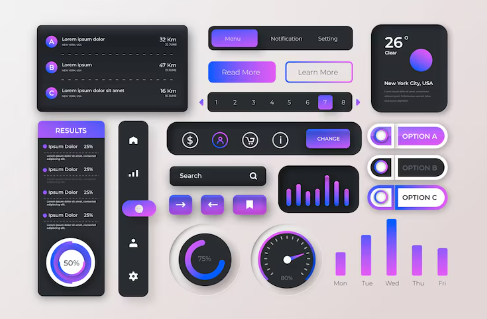

UX/UI
- Do inglês User Experience (Experiência do Usuário) é a área que cuida de como o usuário interage com o produto, seja ele um software ou um hardware, com o objetivo de tornar a interação eficiente, agradavel e fácil. Tudo faz parte da experiência, desde quando você compra, quando você monta, quando você usa e até mesmo depois que você usa, é por isso que o UX não é exclusivo da informatica.
- User Interface (Interface do Usuário) não é só o visual do software como segue na imagem
- mas é o ponto de interação entre o humano e a maquina. Assim o design de qualquer interface que o usuário interage pode ser considerado UI como as opções de um microondas ou o painel de um carro por exemplo.

A importancia do UI e UX:
- O produto fique intuitivo e fácil de usar
- O produto seja acessivel para todos incluindo deficientes físicos e visuais
- O usuário não fique perdido/inseguro enquanto usa o produto
- As pessoas evitem abandonar o sistema
- Os clientes façam marketing boca a boca positivo para a marca
- Retrabalho e problemas futuros no desenvolvimento sejam evitados
Uma boa experiência junto com uma boa interface faz com que:
É por isso que trabalhar com o ux e ui em mente desde o começo do desenvolvimento é fundamental.
Mais sobre a área
É muito comum os profissionais da área usarem de prototipação por meio de ferramentas como o Figma e o Canvas, uso da teoria das cores, testarem a aplicação em diferentes resoluções para diferentes plataformas como PC e o Celular, pesquisarem os clientes para entenderem a atenderem suas nescessidades, criação de personas e da jornada do usuário.